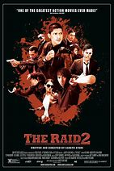

|
1.
The Raid: Redemption
(2011)
1hr 41min | Action, Thriller, Crime
 7.6/10
 73
Official Trailer
|
In Jakarta, Indonesia, Lieutenant Wahyu organizes the invasion of an apartment building that is the safe house of the powerful and cruel drug lord Tama and his gang. The SWAT team breaks in the building but one lookout sees and warns the gangsters and the police force is trapped on the seventh floor. They learn that Lt. Wahyu has not informed his superiors about the operation. Now the police officers have to fight with limited ammunition against the armed and dangerous gangsters. |
Iko Uwais
Joe Taslim
Yayan Ruhian
Arifin Putra
Donny Alamsyah
|
Gareth Evans
|
|  |
2.
The Raid 2
(2014)
2hr 30min | Action, Crime, Thriller
8/10
71
Official Trailer
|
He thought it was over. After fighting his way out of a building filled with gangsters and madmen - a fight that left the bodies of police and gangsters alike piled in the halls - rookie Jakarta cop Rama thought it was done and he could resume a normal life. He couldn't have been more wrong. Formidable though they may have been, Rama's opponents in that fateful building were nothing more than small fish swimming in a pond much larger than he ever dreamed possible. And his triumph over the small fry has attracted the attention of the predators farther up the food chain. His family at risk, Rama has only one choice to protect his infant son and wife: He must go undercover to enter the criminal underworld himself and climb through the hierarchy of competing forces until it leads him to the corrupt politicians and police pulling the strings at the top of the heap. And so Rama begins a new odyssey of violence, a journey that will force him to set aside his own life and history and take on a new identity as the violent offender "Yuda." In prison he must gain the confidence of Uco - the son of a prominent gang kingpin - to join the gang himself, laying his own life on the line in a desperate all-or-nothing gambit to bring the whole rotten enterprise to an end. |
Iko Uwais
Arifin Putra
Yayan Ruhian
Oka Antara
Tio_Pakusadewo
|